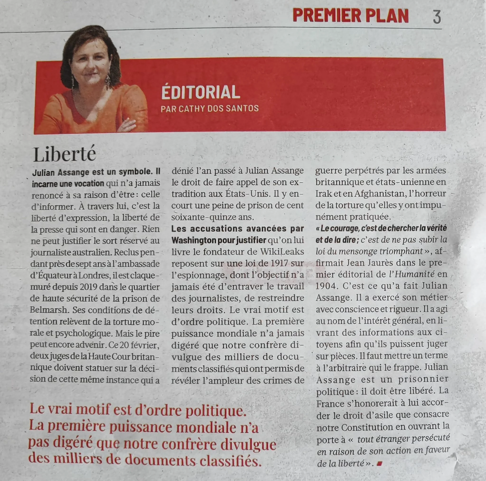

Publication d’archives
Julian Assange est un prisonnier politique : il doit être libéré !
Date indiquée par Facebook · 20 février 2024
Texte conservé avec la publication
Julian Assange est un prisonnier politique : il doit être libéré !

Sources
Archive rouge · export Facebook · AR-0002-FB-01472
À lire aussi · 6 novembre 2024 : le PCF répond à l’élection de Trump